目次 > ゲームについて > 日本Falcom 攻略 > ZWEI II > アイテム一覧 > イベントアイテム
らんの眼
ZWEI II (ツヴァイ 2、ZWEI II Plus)
| 概要 | 情報 | 攻略チャート |
| フード交換 | ペットについて | ボス戦 |
| 敵キャラ一覧 | ハンターランク | G-コロッセオ |
| アイテム一覧 | ガジェット一覧 | トレジャー一覧 |
| ダンジョン一覧 | クリアデータ特典 | Plusの追加要素 |
| ZWEI II攻略へ | 目次へ戻る |
| [ 武器、魔法 ] [ 防具 ] [ アクセサリー ] [ イベントアイテム ] [ フード ] |
| イベントアイテム |
| 名前 | 画像 | 効果 | 入手方法 |
| Aパーツ | アンカーギアのクリティカル率が上昇 | セクンドゥム廃坑「魔法石採掘場(LV.2)」の奥 | |
| Bパーツ | フックギアが使えるようになる | オルディウム神殿「水の聖域(LV.5)」の奥 | |
| Cパーツ | 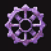 | アンカーギアのスキが短くなる | 金闇の森「金の沼地(LV.12)」の奥 |
| Dパーツ | |
バーニングギアが使えるようになる | アウロン大鉄塔「軌道連絡駅(LV.10)」の奥 |
| Eパーツ | グライドギアが使えるようになる | 星ヶ峰「吹雪ヶ原(LV.18)」の奥 | |
| Fパーツ | ブレードギアが使えるようになる | 「アルジェスの地図」をカラス(アルッテの町)と交換 | |
| 工具セット | 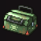 | ミリアムから借りる | |
| 光の銀杖 | 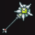 | 「極光の魔法」が使えるようになる | 星降りの里のイベント |
| 月支の剣 | 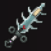 | ルナ＝ムンドゥスへの扉を開く | 星ヶ峰のボス「ガルガリオン」を倒す |
| ピンクチケット | 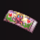 | G-コロッセオへ行けるようになる | 超人ギャランドゥに会う |
| レベルプレートG | 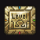 | ダンジョンのレベルを30 にでき、一部のダンジョンに限り通常と異なるトレジャーが入手できる | 最強の男杯を制覇 |
| 幸運の金貨 | 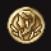 | 誰かの落とし物 | オルディウム神殿「地下瞑想場(LV.7)」の宝箱 |
| 名前 | 画像 | 効果 | 入手方法 |
| 名前 | 画像 | 入手方法 |
| 鷹の彫り物 | 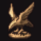 | ヤサク(星降りの里)からもらう |
| お手元ライト | 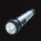 | テオ(アルッテの町)に「鷹の彫り物」と交換してもらう |
| 新品ノート | 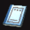 | ヘレナ(アルッテの町)に「お手元ライト」と交換してもらう |
| 謎のペットフード | 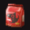 | ビアンス(ペットショップ)に「新品ノート」と交換してもらう |
| おしぼり | 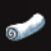 | ホアン(大熊猫楼)に「謎のペットフード」と交換してもらう 注意：犬や猫に「謎のペットフード」を渡さないように |
| うに缶 | 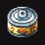 | サラサ(星降りの里)に「おしぼり」と交換してもらう |
| 猫じゃらし | バラン(ロアルタ村 など)に「うに缶」と交換してもらう(条件悪すぎ) | |
| 枝切りバサミ | 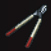 | ロッテ(G-コロッセオ)に「猫じゃらし」と交換してもらう |
| 手裏剣 |  |
忍び(星降りの里 鳥居の側)に「枝切りバサミ」と交換してもらう |
| 変声機 | 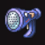 | ワイゼン村長(ロアルタ村)に「手裏剣」と交換してもらう |
| ばんそうこう | 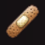 | バーミリア(アルッテの町)に「変声機」と交換してもらう |
| アルジェスの地図 | 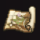 | クレース(星降りの里)に「ばんそうこう」と交換してもらう カラス(アルッテの町)に「アルジェスの地図」と「Ｆパーツ」を交換してもらえる |
| 名前 | 画像 | 入手方法 |
| 名前 | 画像 | 入手方法 |
| 謎のトレジャー | 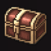 | ダンジョンの宝箱 |
| モンスターフィギュア | 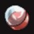 | モンスターを倒す(サンタなおヒゲを装備していれば手に入る確率が上がる) |
| 音楽CD | 4段目のフードを10 個集め、大熊猫楼で交換する 万能執事杯を制覇 各音楽CD の詳細はフード交換を見てください |
|
| うさぎの耳 | 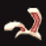 | 「夢幻迷宮 II」の40 階にいるボスを倒す |
| うさぎの手 | 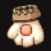 | 「夢幻迷宮 II」の40 階にいるボスを倒す |
| うさぎの尻尾 | 「夢幻迷宮 II」の40 階にいるボスを倒す | |
| ピンクの衣装 | 「夢幻迷宮 II」の40 階にいるボスを倒す | |
| 名前 | 画像 | 入手方法 |
| ピンキィスター入手まで |
| ピンキィスターを入手するためには、「うさぎの耳」、「うさぎの手」、「うさぎの尻尾」、および「ピンクの衣装」が必要になります。 これらは「夢幻迷宮 II」で入手できるのですが、セクンドゥム廃坑、オルディウム神殿、金闇の森、そしてアウロン大鉄塔にいるボスを初めて倒すたびに、「うさぎの耳」、「うさぎの手」、「うさぎの尻尾」、そして「ピンクの衣装」の順で入手できます。 ボスと入手できるアイテムに対応はなく、あくまでも倒した順番によるようです。 (anonymous さん、情報提供ありがとうございます。Thank you anonymous.) |
| 消耗品 |
| 名前 | 画像 | 価格 | 効果 | 入手方法 |
| 爆弾 | 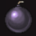 | 10 | 敵や壁を破壊する | 行商人 <<カラス>> で購入 工房 <<ガレージ・ガジュレー>> で購入 万屋本舗 <<ヒコメ>> で購入 |
| すーぱー万能薬 | 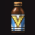 | 5000 | 全ての状態異常を回復する | 行商人 <<カラス>> で購入 万屋本舗 <<ヒコメ>> で購入 |
| ペットフード | 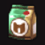 | 100 | 使うとペットが50 の経験値を得られる | ペットショップ <<アントニー>> で購入 |
| カプセルトイ | 20000 | 全てのフィギュアをそろえると「マッスルギア」が手に入る | G-コロッセオの<<G-販売機>> で購入 | |
| 名前 | 画像 | 価格 | 効果 | 入手方法 |
| [ 武器、魔法 ] [ 防具 ] [ アクセサリー ] [ イベントアイテム ] [ フード ] |
| 概要 | 情報 | 攻略チャート |
| フード交換 | ペットについて | ボス戦 |
| 敵キャラ一覧 | ハンターランク | G-コロッセオ |
| アイテム一覧 | ガジェット一覧 | トレジャー一覧 |
| ダンジョン一覧 | クリアデータ特典 | Plusの追加要素 |
| ページの上部へ | ZWEI II 攻略へ | 目次へ戻る |